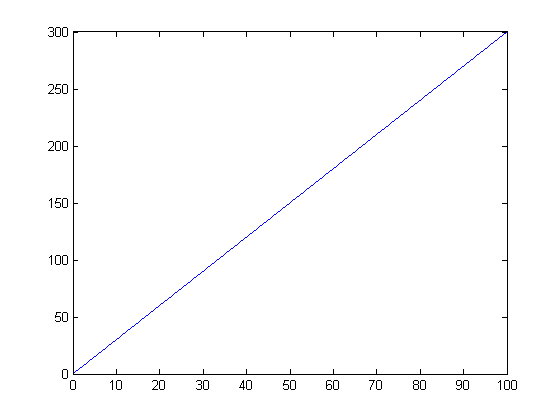
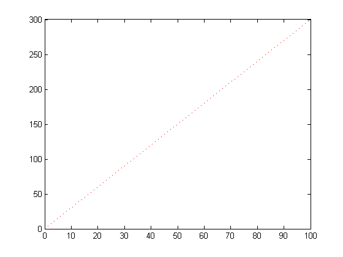
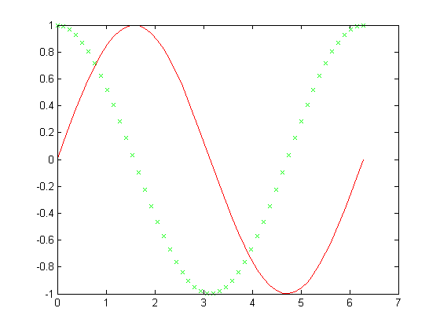
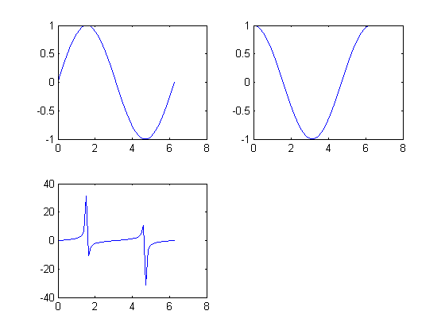
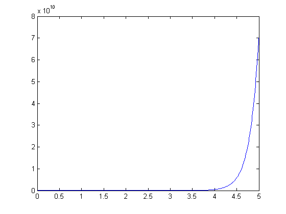
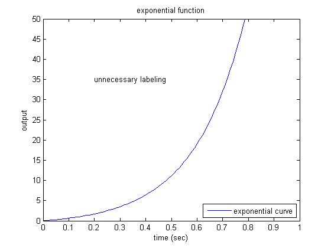
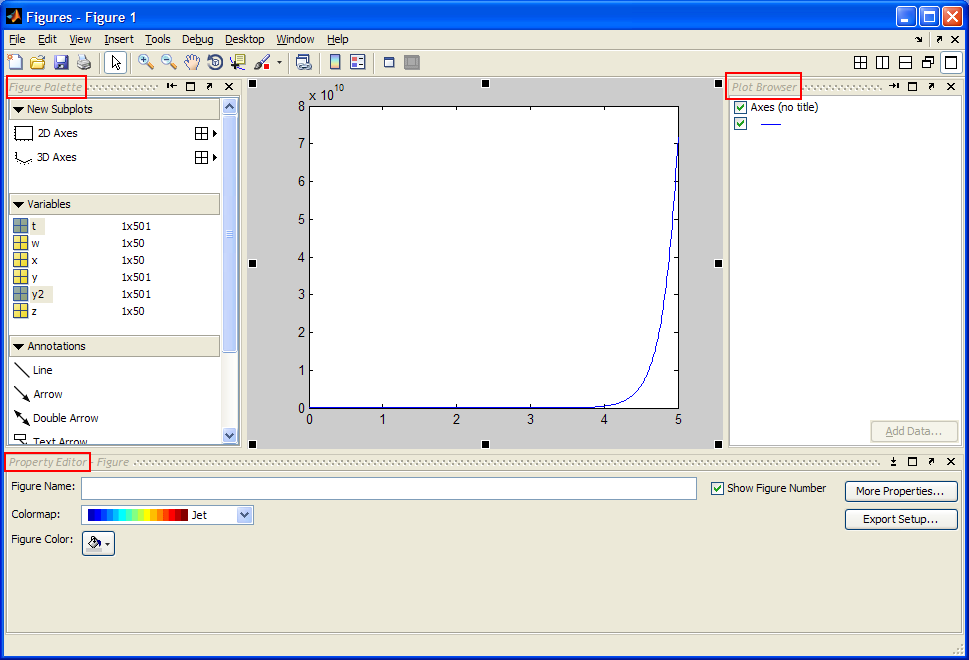
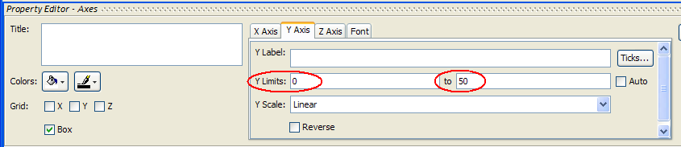

Extras: Plotting in MATLAB
Contents
One of the most important functions in MATLAB is the plot function. The plot command also happens to be one of the easiest functions to learn how to use. The basic syntax of the function call is shown below. This code can be entered in the MATLAB command window or run from an m-file.
plot(x,y)
This command will plot the elements of vector y (on the vertical axis of a figure) versus the elements of the vector x (on the horizontal axis of the figure). The default is that each time the plot command is issued, the current figure will be erased; we will discuss how to override this below. Consider the following simple, linear function.
y=3x
If we wished to plot this function, we could create an m-file with the following code to generate the basic plot shown below.
x = 0:0.1:100;
y = 3*x;
plot(x,y)
 One thing to keep in mind when using the plot command is that the vectors x and y must be the same length. The other dimension can vary. MATLAB can plot a 1 x n vector versus an n x 1 vector, or a 1 x n vector versus a 2 x n matrix (you will generate two lines), as long as n is the same for both vectors.
The plot command can also be used with just one input vector. In that case the vector columns are plotted versus their indices (the vector [1:1:n] will be used for the horizontal axis). If the input vector contains complex numbers, MATLAB plots the real part of each element (on the horizontal axis) versus the imaginary part (on the vertical axis).
Plot aesthetics
The color, point marker, and line style can be changed on a plot by adding a third parameter (in single quotes) to the plot command. For example, to plot the above function as a red, dotted line, change the m-file as follows to generate the figure shown below.
x = 0:0.1:100;
y = 3*x;
plot(x,y,'r:')
 The third input consists of one to three characters which specify a color, point marker type, and/or line style. The list of colors, point markers, and line styles are summarized below.
y yellow . point - solid
m magenta o circle : dotted
c cyan x x-mark -. dashdot
r red + plus -- dashed
g green * star
b blue s square
w white d diamond
k black v triangle (down)
^ triangle (up)
< triangle (left)
> triangle (right)
p pentagram
h hexagramYou can also plot more than one function on the same figure. Let's say you want to plot a sine wave and cosine wave on the same set of axes, using a different color and style for each. The following m-file will plot a sine wave and cosine wave, with the sine wave as a solid red line and the cosine wave as a series of green x's.
x = linspace(0,2*pi,50);
y = sin(x);
z = cos(x);
plot(x,y,'r', x,z,'gx')
 By adding more sets of parameters to plot, you can plot as many different data sets on the same figure as you want. When plotting many things on the same graph it is useful to differentiate the different data sets based on color and point marker. This same effect can also be achieved using the hold on and hold off commands. The same plot shown above could be generated using the following code.
x = linspace(0,2*pi,50);
y = sin(x);
plot(x,y,'r')
z = cos(x);
hold on
plot(x,z,'gx')
hold off
Always remember that if you use the hold on command all plots from then on will be generated on one set of axes without erasing the previous plot until the hold off command is issued.
Subplotting
More than one plot can be put in the same figure on its own set of axes using the subplot command. The subplot command allows you to separate the figure into as many plots as desired, and put them all in one figure. To use this command, the following line of code is entered into the MATLAB command window or run from an m-file.
subplot(m,n,p)
This command splits the figure into a matrix of m rows and n columns, thereby creating m*n plots on one figure. The p'th plot is selected as the currently active plot. For instance, suppose you want to see a sine wave, cosine wave, and tangent wave plotted on the same figure, but not on the same axes. The following code will accomplish this.
x = linspace(0,2*pi,50);
y = sin(x);
z = cos(x);
w = tan(x);
subplot(2,2,1)
plot(x,y)
subplot(2,2,2)
plot(x,z)
subplot(2,2,3)
plot(x,w)
 As you can see, there are only three plots, even though we created a 2 x 2 matrix of 4 subplots. We did this to show that you do not have to fill all of the subplots you have created, but MATLAB will leave a spot for every position in the matrix. We could have easily made another plot using the subplot(2,2,4) command. The subplots are arranged in the same manner as you would read a book. The first subplot is in the top left corner, the next is to its right. When all the columns in that row are filled, the left-most column on the next row down is filled (all of this is assuming that you fill your subplots in order (i.e. 1, 2, 3,...).
One thing to note about the subplot command is that every plot command issued later will place the plot in whichever subplot position was last used, erasing the plot that was previously in it. For example, in the m-file above, if a plot command was issued later, it would be plotted in the third position in the subplot, erasing the tangent plot. To avoid this problem, the figure should be cleared (using clf), or a new figure should be specified (using figure).
Changing the axes
Now that you have found different ways to plot functions, you can customize your plots. One of the most important ways to do this is with the axis command. The axis command changes the axis of the plot shown, so only the part of the axis that is desirable is displayed. The axis command is used by entering the following code right after the plot command (or any command that has a plot as an output).
axis([xmin, xmax, ymin, ymax])
For instance, suppose want to look at a plot of the function y=exp(5t)-1. The following lines of code will accomplish this.
clf %if needed, this clears the previous subplot
t=0:0.01:5;
y=exp(5*t)-1;
plot(t,y)
 As you can see, the plot goes to infinity. Looking at the vertical axis (scale: 8e10), it is apparent that the function gets large very quickly. To get a better idea of the initial behavior of the function, let's resize the axes. Enter the following command into the MATLAB command window to get a plot focused on the first second of the function.
axis([0, 1, 0, 50])

This plot may be more useful, you can now clearly see what is going on as the function moves toward infinity. When using the subplot command, the axes can be changed for each subplot by issuing an axis command before the next subplot command. There are more uses of the axis command which you can see if you type help axis or doc axis in the MATLAB command window.
Adding text and legend
Another thing that may be important for your plots is labeling. You can give your plot a title (with the title command), x-axis label (with the xlabel command), y-axis label (with the ylabel command), and put text on the actual plot. All of the above commands are issued after the actual plot command has been issued.
A title will be placed, centered, above the plot with the command: title('title string'). The x-axis label is issued with the command xlabel('x-axis string'), while the y-axis label is issued with the command ylabel('y-axis string').
Furthermore, text can be put on the plot itself in one of two ways: the text command and the gtext command. The first command involves knowing the coordinates of where you want the text string. The syntax of the command is text(xcor,ycor,'textstring'). To use the other command, you do not need to know the exact coordinates. The syntax is gtext('textstring') which provides a set of cross-hairs that you can move to the desired location with your mouse and click on the position where you want the text to be placed.
Finally, a legend can be added to the plot to identify various curves. The command is legend('string1','string2','string3'). You can specify as many text strings as there are curves in the plot. The default location of the legend is in the top-right corner, but this can be modified with a parameter called Location.
To demonstrate labeling, let's modify the exponential plot from above. Assuming that you have already changed the axes, copying the following lines of text after the axis command will put all the labels and a legend on the plot.
title('exponential function') xlabel('time (sec)') ylabel('output') legend('exponential curve','Location','SouthEast') text(0.2,35,'unnecessary labeling')
Other commands that can be used with the plot command are:
- figure (opens a new figure to plot on, so the previous figure is preserved)
- close (closes the current figure window)
- loglog (same as plot, except both axes are log base 10 scale)
- semilogx (same as plot, except the x-axis is log base 10 scale)
- semilogy (same as plot, except tje y-axis is log base 10 scale)
- plotyy (plots two curves with two axes, one on the right and one on the left)
- grid (adds grid lines to your plot)
Using the Plot Editor
In addition to entering commands in the command window to edit your plots, you can also edit plots interactively using the toolbar or drop-down menus of any figure, or by double-clicking on portions of a figure. You can specifically open the Plot Editor using the command plottools or by clicking on the icon shown below located at the right of a figure's toolbar.
The Plot Editor consists of three windows that automatically open and surround the original plot the first time the tool is used. To the left is the Figures Palette, to the right is the Plot Browser, and at the bottom is the Property Editor. A picture of the Plot Editor is shown below. MATLAB will remember the last confguration used, therefore, if any of these windows were closed in the previous session, they will not appear when the Plot Editor is opened. Typing the commands figurepalette, plotbrowser, or propertyeditor in the command window can also open each of these windows independently.

To adjust the axes of the plot for example, select the axes, then change the axis limits which appear in the Property Editor at the bottom of the plot.

The Property Editor can also be used to set the Title, X label, and Y label of the plot, as well as the Colors and line styles of the data.
To add new data to the plot, select the x and y data from the Figures Palette in the left window (use the Ctrl key to select more than one item) and drag them into the plot. Using y2 = 2*exp(5*t)-1;, the following plot results.

Use the Plot Browser on the right side of the plot to select which data should be displayed. If you have sub-plots, you can also select or deselect which ones should be displayed.
Of course this is not a complete account of plotting with MATLAB, but it should give you a nice start.